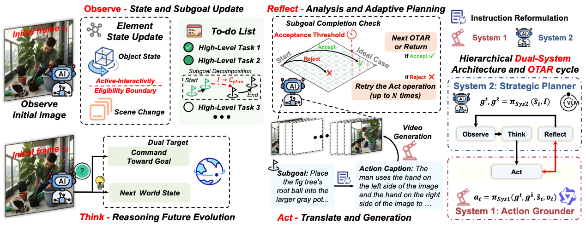

Current video avatars excel at visuals but lack agency. We bridge this gap with L-IVA, a benchmark for long-horizon planning, and ORCA, a framework enabling active intelligence. ORCA mimics an Internal World Model via a closed-loop Observe-Think-Act-Reflect (OTAR) cycle and a hierarchical Dual-System architecture. This design allows avatars to autonomously reason, verify outcomes, and correct errors in real-time. Extensive experiments demonstrate that ORCA significantly outperforms baselines, advancing video avatars from passive animation to active, goal-oriented behavior.

Figure 1. The ORCA Framework. ORCA enables active intelligence via a closed-loop OTAR (Observe-Think-Act-Reflect) cycle. It features a dual-system architecture: System 2 performs high-level strategic planning and state tracking, while System 1 grounds abstract plans into precise, model-specific action captions for the video generation model.